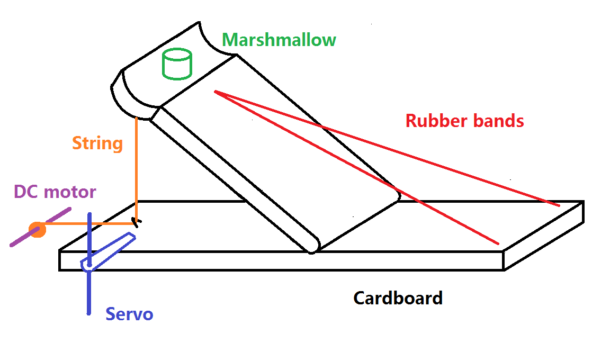
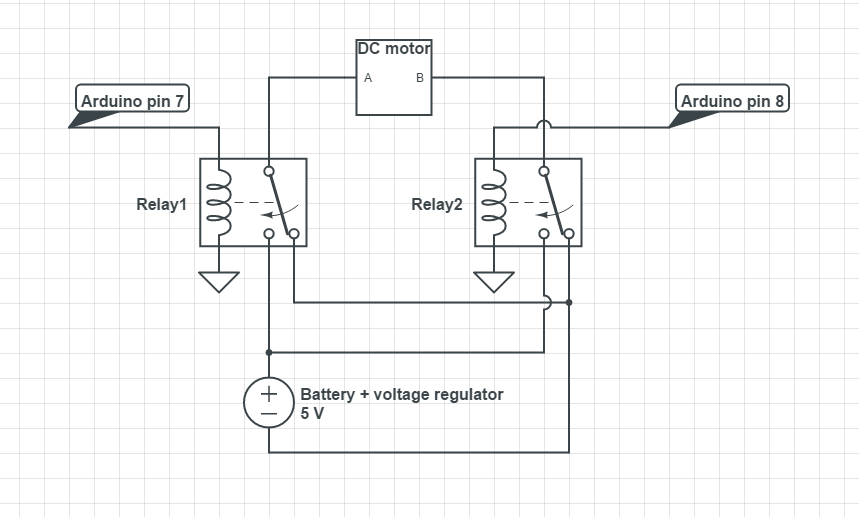
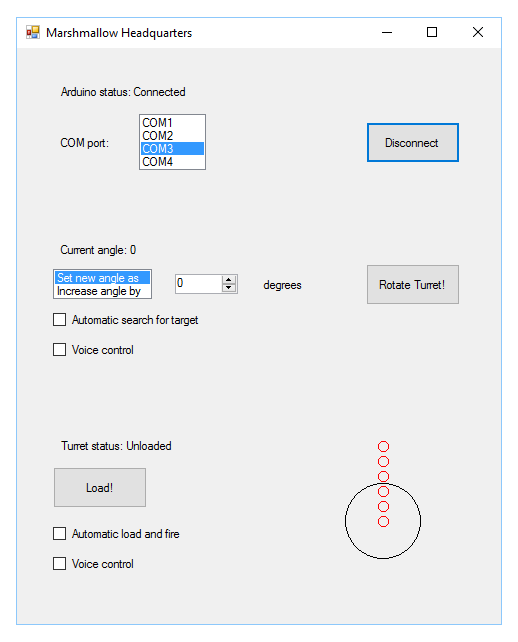

Mindy Wu
Ric Lebre
Henry Cheung
Yijun Jiang
We are building an Arduino-controlled turret that fires marshmallows at people/zombies/aliens/etc. Once completed, this project will have great applications, from defending our school against Caltech intruders to fighting against the First Order.
Mindy developed a great structure out of an Amazon packaging box.
To load
(1) Rotate the servo out of the way
(2) Pull the string with the DC motor until the movable arm is at its lowest position
(3) Rotate the servo back to jam the movable arm
(4) Rewind the DC motor to loosen the string
To fire
(5) Rotate the servo and unblock the movable arm
Since it was hard to find a suitable integrated H-bridge chip, we decided to build our own H-bridge. Two relays are used as SPDT switches. The circuit diagram is shown here:

| Pin 7 = HIGH, Pin 8 = LOW | Pin 7 = LOW, Pin 8 = HIGH | Pin 7 = HIGH, Pin 8 = HIGH | Pin 7 = LOW, Pin 8 = LOW |
| A---B | B---A | No current | No current |
We wrote a GUI by C# that talks to the Arduino board through a serial port. Therefore, besides controlling our weapon by pushbuttons, we can also load and fire on a computer.
(1) Rotating turret controlled by the GUI: aim at your enemy with your mouse!
(2) Voice control: use your vocal cord as a trigger!
(3) Auto-targeting with IR sensor: nowhere to hide!
(4) Auto-loading and multiple shots per trigger: an automatic weapon!